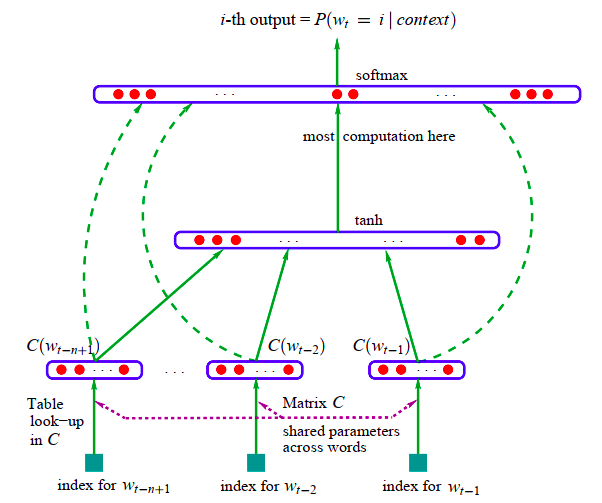

定义一个词典，大小为|V|，那么词袋模型就可以为文本序列生成一个由0和1构成的独热向量(one-hot vector)。向量第i个位置取值为1，表示词典中第i个词出现在当前文本中。
可是，独热表示存在很多问题：
分布式表示使用一个低维的稠密的向量来表示词，这样可以大幅降低维度，并且还可以通过词向量之间的距离来度量词与词之间的相似度。
暂时只考虑统计语言模型，它其实有两个功能：一是可以计算出文本序列的联合概率（主要功能），另一个是得出词的分布式表示。
假设句子$s$由若干个词组成$s=(w_1, w_2, ...)$，那么该句子出现的概率，就是各个词出现概率的联合概率：
$$ p(s) = p(w_1, w_2, ...) = p(w_1)p(w_2|w_1)p(w_3|w_1, w_2) \cdot \cdots $$
这就是语言模型的一般形式，可以通过每个词的概率计算整个句子的概率。但是，由于词片段太多，函数的参数空间非常大，同时根据极大似然估计得到的各个词片段的条件概率几乎为0，所以一般形式的语言模型几乎是不可能实现的。
N-gram提出引入了马尔科夫假设，即假设任意一个词出现的概率之和前n-1个词有关，这里引用下bengio的公式：
$$ p(w_t|w_1^{t-1}) = p(w_t|w_{t-n+1}^{t-1}) $$
其中$w_1^{t-1}$表示从$w_1$到$w_{t-1}$.
这样便出现了如下三种常见的n元语法模型：
为了避免参数太多，n最多只取到3。
语言模型借助内部的分布式表示来预测句子中的下一个词，所以，通过训练不断提高语言模型的预测能力就是在学习其内部的分布式表示。
至此，语言模型的功能作用已经明确了。设计一个语言模型来得到高质量的词表征，成为了自然语言处理经久不衰的研究热点。
Bengio于2003年提出NNLM，模型为函数：
$$ \begin{aligned} f(i, w_{t-1}, ..., w_{t-n+1}) = g(i, C(w_{t-1}), ..., C(w_{t-n+1})) \end{aligned} $$
如下图所示，模型可分为输入层、映射层、隐藏层和输出层。
image（1）输入层
输入为上下文中每个词在词典中的id；
（2）映射层 projection layer
根据输入的index在权重矩阵$C \in \R^{|V| \times d}$对应列取出初始的词向量，拼接后输出：
$$ x = (C(w_{t-n+1}), ..., C(w_{t-1})) $$
（3）隐藏层
映射层的输出将被连接成长度为$(n-1)d$的向量，隐藏层单元个数为$h$
$$ out = tanh(Hx + b_1) $$
其中，参数$H \in \R^{(n-1)d \times h}$，偏置$b_1 \in \R^{h}$。
（4）输出层
图中虚线表示：映射层的输出可能会选择性地作为输出层的输入，即映射层可能和输出层相连。
输出层的输出大小肯定是$|V|$的，即
$$ y = Utanh(Hx + b_1) + Wx + b_2 $$
其中权重$U \in \R^{h \times |V|}$，而$W \in R^{(n-1)d \times |V|}$，$b_2 \in \R^{|V|}$。
整个模型的参数为：
$$ \begin{aligned} \theta & = (W, U, H, C, b_1, b_2)\\ & = (n-1)d \times |V| + h \times |V| + (n-1)d \times h + |V| \times d + h + |V|\\ & = |V| [(n-1)d + h + d + 1 ] + h[(n-1)d + 1] \end{aligned} $$
其中绝对主导的就是$|V|(n-1)d$了。
$$ L = \frac{1}{T}\sum_t \log f(w_t, w_{t-1}, ..., w_{t-n+1}; \theta) + R(\theta) $$
其中$R(\theta)$是正则化项，本文实验中为作用在神经网络权重和矩阵C上的权重衰减惩罚。
这个模型是深度学习最简单的DNN构建的语言模型，虽然可行，但是参数太多了，并且计算量非常大。
gensim是一个包含了众多词向量模型的算法包，比如word2vec、Doc2Vec、FastText等。
本文主要探讨word2vec的一些实践，主要涉及gensim.models.Word2Vec和gensim.models.keyedvectors.Word2VecKeyedVectors两个类。
gensim包允许
from gensim.models import Word2Vec # 模型首次创建并训练 model = Word2Vec(sentences, window=10, size=100, sg=1, hs=0, negative=5, min_count=10, iter=10) # 加载模型并进行二次训练 model = Word2Vec.load(filepath) model.train([["hello", "world"]], total_examples=1, epochs=1)
模型的词向量保存在了KeyedVectors中，可以通过model.wv['computer']获取词向量。
保存模型的两种方式：
词向量保存在model.wv.KeyedVectors实例中，
# 整个模型的保存 model.save(fname) # 只保存词向量文件 model.wv.save_word2vec_format(fname, fvocab=None, binary=False)
binary控制是否以二进制保存，如果为False就可以得到常规的词向量文件了。
由于只需要词向量就可以进行相似度计算，所以仅加载词向量：
word_vectors = gensim.models.keyedvectors.Word2VecKeyedVectors.load_word2vec_format('model/word2vec.iter5')
下面就可以调用方法来进行一些计算：
words_closer_than(w1, w2) 返回所有w3，满足distance(w1, w3) < distance(w1, w2)most_similar(positive, negative)most_similar_cosmul(positive, negative, topn=10)similar_by_word(word, topn=10) 找到和word最相似的前N个词similar_by_vector(vector, topn=10) 找到和vector最相似的前N个词similarity_matrix(dictionary)wmdistance(document1, document2)doesnt_match(words)cosine_similarity(vector_1, vectors_all)distances()most_similar_to_given(entity1, entities_list)